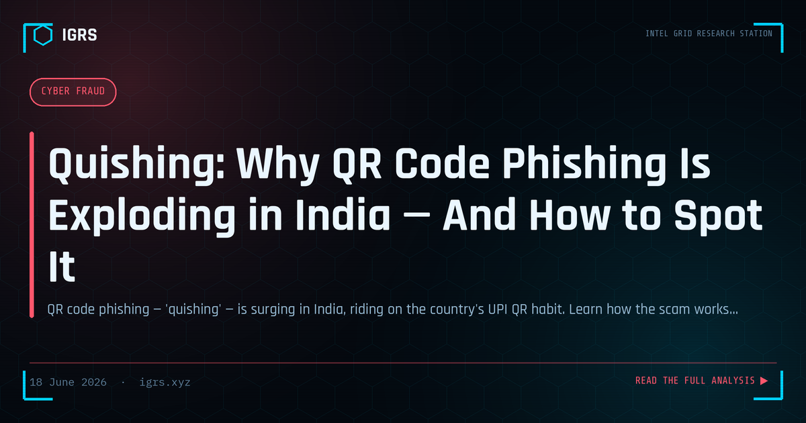

Quishing: Why QR Code Phishing Is Exploding in India — And How to Spot It
Quishing: The Rise of QR Code Phishing
QR codes have become ubiquitous in India — for payments, menus, information, and access. This very ubiquity and trust has made them a new attack vector: quishing, or QR code phishing, where malicious QR codes direct victims to phishing sites or trigger fraudulent actions. As QR usage surges across Indian commerce and daily life, understanding and defending against quishing is increasingly important. This guide explains the threat and protection.
How Quishing Works
Quishing exploits the fact that QR codes are unreadable to humans — you cannot see where a QR code leads until you scan it. Attackers create malicious QR codes that direct victims to phishing pages, trigger payment requests, or download malware. Because users have learned to trust and scan QR codes routinely, especially for payments, they often scan without suspicion, walking directly into the trap the attacker has set.
Common Quishing Scenarios
| Scenario | Method |
|---|---|
| Fake payment QR | Redirecting payments to fraudster |
| Tampered physical QR | Sticker over legitimate code |
| Phishing QR in email | Bypassing email link filters |
| Fake parking/fine QR | Fraudulent payment collection |
The UPI Payment Risk
In India, the most significant quishing risk involves UPI payments. A common misconception is that scanning a QR code receives money, when in fact QR codes are typically used to send money. Fraudsters exploit this confusion, tricking victims into scanning codes that initiate payments from the victim rather than to them. Understanding that scanning a payment QR code authorises sending money — never receiving it — is the single most important defence against UPI quishing fraud.
Physical QR Code Tampering
A particularly insidious form of quishing involves tampering with physical QR codes in public places — placing a fraudulent sticker over a legitimate code at a shop, parking meter, or payment point. Unsuspecting users scan the tampered code, which directs their payment or information to the fraudster. This attack exploits the trust in physical, official-looking QR codes, and is difficult to detect because the tampered code appears legitimate in its expected location.
Quishing in Phishing Emails
Attackers also use QR codes in phishing emails to bypass security filters. Traditional email security scans links, but a QR code is an image, potentially evading link-based detection. The victim scans the code with their phone — often moving from a protected corporate device to a less protected personal one — and is directed to a phishing site. This technique has grown as attackers seek ways around improving email link filtering.
Protecting Against Quishing
Defending against quishing involves verifying QR codes before scanning, checking the URL a QR code leads to before proceeding, being especially cautious with payment QR codes and understanding that scanning sends money, inspecting physical codes for signs of tampering or stickers, and treating QR codes in emails with the same suspicion as links. For payments, confirming the recipient details before authorising — rather than trusting the QR code alone — prevents fraudulent redirection.
Awareness as Defence
For Indian users navigating a QR-saturated environment, awareness is the primary defence against quishing. Understanding that QR codes can be malicious, that scanning a payment code sends rather than receives money, that physical codes can be tampered with, and that QR codes in emails warrant suspicion transforms routine scanning from an automatic habit into a considered action. Fraud involving QR codes attracts the cheating provisions of Section 318 BNS and IT Act provisions for computer-related fraud. As QR codes remain integral to Indian digital life, spreading this awareness — particularly around UPI payment confusion — is essential to protecting users from a fast-growing and easily overlooked fraud vector.